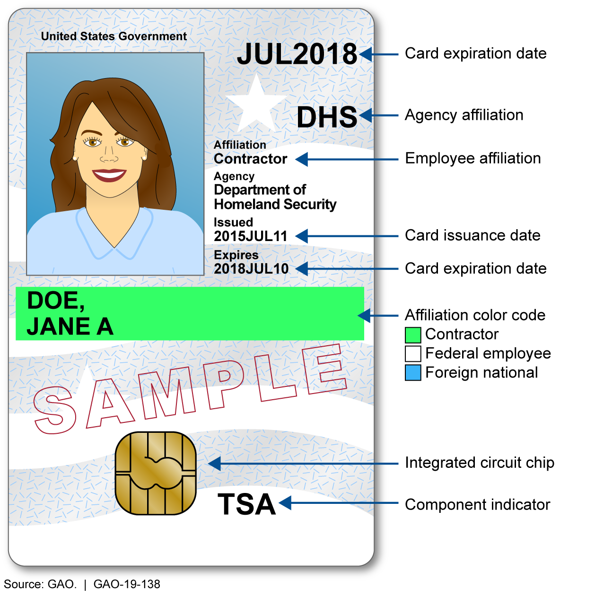
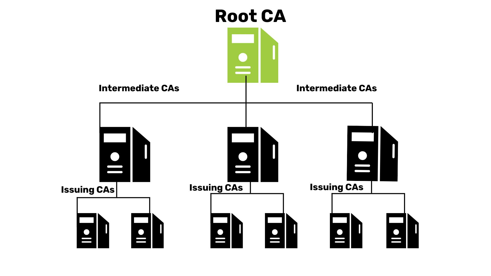
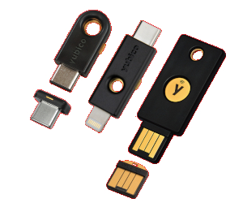
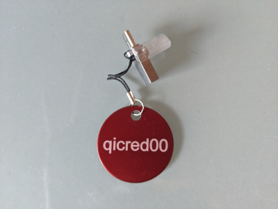

PIV — The Gold Standard for High-Assurance Authentication
SouthEast LinuxFest 2026
Jean Pierre LeJacq
Quoin Inc.
About
Jean Pierre is co-founder and CTO of Quoin Inc., a software
consultancy specializing in open-source software development, DevOps,
and security. He volunteers for local Charlotte non-profits partnering
with Apparo. He's been presenting at SELF for many years.
Jean Pierre LeJacq
Quoin Inc.
Hurt Hub @ Davidson, DAVIDSON, NC
mailto:jeanpierre.lejacq@quoininc.com
https://linkedin.com/in/jean-pierre-lejacq
Two Thoughts Worth Keeping in Mind
Those who cannot remember the past are condemned to repeat it.
— George Santayana
The Life of Reason, 1905
|
An ounce of prevention is worth a pound of cure.
— Benjamin Franklin, 1736
|
Outline
- What is PIV?
- Use cases for PIV
- Demo!
- How this compares to alternatives
What is PIV - core components

- PIV card
-
A physical smart card containing an embedded chip, a photograph, and
printed identity details.
- Cryptographic keys/certificates
-
Used for identity verification, data encryption, and signing
electronic documents - stored/generated on card.
- Biometrics
-
Secure storage of the holder's fingerprints and facial images to
prevent identity fraud.
What is PIV - Public Key Infrastructure (PKI)

Famework of roles, policies, hardware, software, and procedures used
to create, manage, distribute, use, store, and revoke digital
certificates and manage public-key encryption.
-
Process is the key here, not the technology.
-
Full lifecycle considered from start of a certificate.
-
Automatic fail-safe backstop on process breakdown.
-
Main challenge in adopting PIV.
PIV: Origins and Motivation
-
Trigger: 9/11 Commission Report (2004) — hijackers
used 364 aliases and fraudulent government IDs; no agency
could verify another's credentials
-
HSPD-12, August 2004 — Bush directed all federal
agencies to adopt one tamper-resistant credential for
physical and logical access
-
NIST FIPS 201, February 2005 — standard delivered
in six months; defined card, chip, certificate profiles, PIN
policy, and PKI hierarchy
-
Scope — all federal civilian employees and
contractors; extended to DoD via the Common Access Card (CAC)
PIV Hardware

Options
-
Smart cards — ISO/IEC 7816; USB reader (~$20)
- USB tokens — YubiKey 5 (~$55–65),
Nitrokey 3 (~$49); no reader needed
- USB-C + NFC — wired and contactless tap
Hardware enforces
-
Dedicated to only this function - small attack vector.
-
Not tied to one computer (for example, TPM).
-
PIN lockout after 3–5 failed attempts.
-
Optional touch confirmation (some biometric).
-
Optional on-device key generation provable via attestation
certificate.
-
Private keys never leave the device. All crypto operations
performed on device.
Inside a PIV Token: Key Slots
| Slot | Name | Primary use | PIN required |
9a | PIV Authentication |
SSH, TLS client, system login | Once per session |
9c | Digital Signature |
Document, code, email signing | Each use |
9d |
Key Management |
Email/data decryption (ECDH) |
Once per session |
9e | Card Authentication |
Physical access control | None |
f9 | Attestation |
Prove key was generated on-device | None |
82-95 |
Retired Key Managements |
Retain ability to decrypt using expired keys. |
Once per session |
|
Named object containers |
Photo, fingerprints, ...
|
|
- Contents of each slot
-
Key pair, X.509 certificate, and arbritrary binary blobs (Yubico
extension).
- Supported key types
-
RSA 2048/4096, ECC P-256/P-384, Ed25519/X25519
PIV Authentication Factors
- Something you have — the physical hardware token
- Something you know — the PIN (6–8 chars)
- Something you are — on-card biometric fingerprint
template (optional, PIV-I high-assurance tier)
Touch policy (cached or per-operation): even a compromised OS
cannot sign without a physical tap.
PIN lockout: exhaust retry count (default 3) and card
locks. Exhaust PUK and card is permanently blocked.
Why PIV? The Threat Landscape
- Phishing — fake login pages; still the #1
attack vector every year
- Server-side breach — password hashes and TOTP
seeds stored server-side
(Heartbleed, LastPass 2022, Okta 2023, Twilio/Authy 2022)
- Real-time MITM — OTP relayed within 30 s
by evilginx2 / Modlishka proxies
- SSH key sprawl — unmanaged software keys
on hundreds of servers; no revocation path
PIV's hardware asymmetric crypto eliminates all of these —
no shared secret ever leaves the device.
Use Cases Overview
| Use case | Protocol / tool | PIV slot |
|---|
| Disk encryption on boot |
systemd-cryptenroll (LUKS2) | 9a |
| Device authentication |
PAM |
9a |
| On-premise domain authention |
Kerberos TGT (PAM / SSD) |
9a |
| Cloud domain authention |
Entra PRT (proprietary) |
9a |
| sudo privilege escalation |
pam_pkcs11 / pam_p11 | 9a |
| Website / service authentication |
TLS client certificate (mTLS) | 9a |
| SSH authentication |
OpenSSH PKCS11Provider | 9a |
| IPsec VPN |
strongSwan IKEv2 + PKCS#11 | 9a |
| Email signing / encryption |
S/MIME (Thunderbird, Outlook) | 9c / 9d |
| Code and document signing |
Authenticode, cosign, codesign | 9c |
Use Case: disk decryption on boot
Unlocks a LUKS2 volume with a PIV token. Tools:
| Function | Tool |
|---|
| Storage device |
Any LUKS compatible drive, including OPAL SED drives.
|
| PIV enrollment |
systemd-cryptenroll
|
| Initramfs generator |
dracut |
| Bootloader |
systemd-boot |
| Boot UI (splash) |
Plymouth |
| LUKS unlocker |
clevis |
Use Case: disk decryption on boot
Comparison
| Feature |
Linux/PIV |
Linux/Password |
Windows/macOS |
| Same credentials as other user case |
Yes |
Maybe |
N/A - no authentication |
| MFA |
Yes |
No |
N/A - no authentication |
| Unlock not bound to device |
Yes |
Yes |
No (TPM or recovery key stored someplace) |
Take aways
-
Exactly same credential PIV/Pin/Touch with PIV.
-
Complete threat model coverage with PIV unlike Windows/macOS.
-
LUKS supports fallback on loss of PIV.
Use Case: device authentication
Login to device
| Function | Tool |
|---|
| Login manager |
Native console and GDM, SDDM, ...
|
| Authentication framework |
PAM using libpam-pkcs11
|
Comparison
| Feature |
Linux |
Windows |
macOS |
| Login |
Yes |
Windows Pro / domain joined only, out of the box |
Yes, out of the box |
| Screen lock |
Yes |
Windows Pro / domain joined only, out of the box |
Yes, out of the box |
| Fallback |
Yes |
No |
Maybe |
| Crypto |
RSA, NIST, 25519 |
RSA |
RSA |
Take aways
-
True MFA authentication on all platforms.
-
Single credential for multiple devices.
Use Case: privilege elevation
Temporary elevation of privilege to root or other role accounts.
| Function | Tool |
|---|
| Utility |
sudo, run0, doas, ...
|
| Authentication framework |
PAM using libpam-pkcs11
|
Comparison
| Feature |
Linux |
Windows |
macOS |
| Elevation |
MFA with caching |
UAE, no MFA |
MFA with caching |
Take aways
-
True MFA authentication on Linux and macOS.
-
Single credential for multiple devices.
-
True MFA for every privilege elevation - Token presence + PIN
-
Audit log ties every
sudo to a certificate serial
number
-
Works alongside SSSD for centrally managed subject mappings
Use Case: SSH Authentication
OpenSSH supports following hardware based MFA:
- PIV
-
Support since 2010 through PKCS#11 middleware library.
- FIDO2/U2F
-
Support since 2020 through libfido2 library.
- OpenPGP
-
Support since 2014 using gpg-agent as a replacement for
ssh-agent. Does not support modern OpenSSH.
Use Case: SSH Authentication
Comparison
| Feature |
Password |
PIV |
FIDO (security token) |
FIDO (TPM) |
| Key types |
N/A |
RSA, NIST, Ed25519 |
NIST P-256, Ed25519 |
NIST P-256, Ed25519 |
| Hardware Backed |
No |
Yes |
Yes |
Yes |
| Physical presence |
No |
Yes |
Yes |
Yes |
| Bound to device |
No |
No |
No |
Yes |
| Escrowable |
Yes |
Yes |
No |
No |
| Cloud Synced |
Yes |
No |
No |
No |
| OpenSSH Certificate |
No |
Yes |
Yes |
Yes |
| CA Issued |
No |
Yes |
No |
No |
Take aways
-
FIDO by design are non-escrowable.
-
FIDO by design self issued but this breaks down if OpenSSH
certificates also used.
Use Case: VPN
Options
| Feature |
IPSec |
OpenVPN |
Wireguard |
| Platfom |
Native on Linux, Windows, macOS |
Available on all |
Available on all |
| PKI |
X.509 Standard |
X.509 Quasi |
None - just raw keys |
| PIV |
Yes, on all platforms |
Kind of |
No |
| Protocol/Ports |
UDP/IP dedicated ports |
TCP HTTPS only |
UDP dedicated port |
| Speed |
Fastest |
Slowest |
Fast |
| Key type |
RSA, NIST, Ed25519 |
RSA, NIST, Ed25519 |
Ed25519 |
On linux, strongSWAN and LibreSWAN are the primary options.
IPsec vs. WireGuard: The Lifecycle Gap
WireGuard by design has no PKI:
- Static Curve25519 public keys — never expire, never revoke automatically
- Removing access = hand-edit every server's
[Peer] config
- A key is not bound to a person or certificate — no audit identity
The management vacuum spawned an ecosystem, each reinventing PKI:
| Tool | What it adds back |
|---|
| Tailscale / Headscale |
Identity via Google/GitHub/OIDC; node expiry; key coordination |
| NetBird / Firezone |
IdP integration (Okta, Entra ID); OIDC enrollment; access policies |
| Netmaker |
GUI key distribution; user management; ACL rules |
Every WireGuard management tool is independently recreating enrollment,
identity binding, revocation, and expiry — the core of what IPsec + X.509
solved with open, interoperable standards 25 years ago.
Use Case: Website / Service Authentication
- Entra ID Certificate-Based Auth (CBA) —
authenticate to Entra ID with your PIV cert; Entra ID then
federates your identity (SAML / OIDC) to any connected SaaS —
Microsoft 365, Salesforce, AWS, ServiceNow, and thousands more
- Other enterprise IdPs — Okta, Ping, and
Duo all support certificate auth as a first factor
- Internal dashboards — nginx / Caddy / Traefik
with
ssl_verify_client on and CA trust store
- Kubernetes API — client cert via PKCS#11
engine in kubectl
- HashiCorp Vault — cert auth method;
cert maps to Vault policies
With Entra ID CBA as the IdP, PIV covers virtually the entire
enterprise SaaS estate without requiring each app to support mTLS.
Use Case: S/MIME Email Signing and Encryption
- Slot 9c signs outgoing messages —
the CA chain proves it was really you
- Slot 9d decrypts messages encrypted
to your public key
- Works natively in Thunderbird, Apple Mail, Outlook — load
the PKCS#11 module once and it is transparent
- Non-repudiation: signing cert serial is logged; CA vouches
for identity at time of signing
Code and document signing (slot 9c):
- Windows Authenticode —
signtool.exe
via PKCS#11 MiniDriver
- Container images —
cosign sign --key pkcs11:...
- macOS —
codesign via Smart Card Keychain
- PDFs —
jsignpdf; LibreOffice macro signing
PIV on macOS
Native PIV support via CryptoTokenKit (macOS 10.15+) —
no third-party middleware.
- Plug in YubiKey; cert appears in Keychain Access
under Smart Card token
- Safari, Mail (S/MIME), and Xcode use it transparently
- Smart Card Login: System Settings → Users & Groups
→ Smart Card pairing (
sc_auth pair)
- Enforce token-only login:
defaults write .../com.apple.security.smartcard
enforceSmartCard -bool true
- SSH:
PKCS11Provider /usr/lib/ssh-keychain.dylib
PIV on Windows
Built-in smart card support since Vista; no extra software for
YubiKey or Nitrokey.
- MiniDriver model — plug in; cert appears
in Edge, Outlook, PuTTY-SC automatically
- AD Smart Card Logon — Group Policy:
"Require smart card"; needs Smart Card Logon EKU + UPN SAN
- Entra ID CBA — certificate-based auth
to cloud without ADFS
- RDP forwarding —
mstsc /smartcard
forwards PIV to Remote Desktop sessions
- OpenSSH for Windows —
SecurityKeyProvider in ~\.ssh\config
Certificate Lifecycle Management
| Phase | What happens | Tooling |
|---|
| Enrollment |
Identity proofed; CA issues cert with expiry and Subject DN |
step-ca, EJBCA, AD CS, SCEP |
| Renewal |
New key generated on-device; new cert issued before expiry |
step-ca auto-renew, cron + ykman |
| Revocation |
CA marks cert invalid; all relying services refuse it |
CRL, OCSP, CA admin console |
| Loss / offboarding |
Revoke cert; issue replacement on spare token if needed |
One CA action — no per-service cleanup |
One revocation at the CA instantly blocks: SSH, VPN, disk unlock,
sudo, websites, email signing — all services, simultaneously.
Simple PKI: OpenSSL CA

Commercial CA not needed — an OpenSSL CA is sufficient for a small
team.
-
This is definitely the hard part of PIV. But it's defintely a
pay me know or pay me later situation.
-
Configuation is all text based and easily source controlled.
-
OpenSSL documentation is quite good and accurate to the
implmentation.
-
Portability is the hardest part. Windows and macOS documentation is
dreadful. Many things are broken.
-
Design and architecture of the PKI is quite thin, lot's of bad
advice, and AI agents are dreadful at this particular task.
Simple PKI: Certificate Hierarchy
Root
|- Intermediate for PIV
| |- Jean Pierre
| |- Jane Doe
| `- ...
`- Intermediate for Servers
|- www.example.org
|- vpn.example.org
`- ...
Recommendations
-
Keep things as simple as possible while still enforcing required
policies.
-
Top level of hierarchy should be organized on key types. Windows and
macOS cannot handle hierarchy with mixed types.
-
Use zlint (https://github.com/zmap/zlint) from very start.
Authentication Landscape Overview
| Method |
Phishing resistant |
Key never leaves HW |
Identity-bound |
Cross-platform |
| PIV / Smart Card |
Yes |
Yes |
Yes (X.509) |
Yes |
| Passkey — device-bound HW key (YubiKey FIDO2) |
Yes |
Yes |
No |
Yes |
| Passkey — platform (TPM / Secure Enclave) |
Yes |
Yes* |
No |
Per device |
| Passkey — synced (iCloud / Google) |
Yes |
No — key leaves device |
No |
Yes |
| Windows Hello for Business |
Yes |
Yes (TPM) |
Via Entra ID |
Windows only |
| Push MFA (Duo, Okta Verify, MS Authenticator) |
No — MFA fatigue |
No |
No |
Yes |
| TOTP (Authenticator App) |
No |
No |
No |
Yes |
Passkey Tiers: Hardware vs. Synced
Device-bound hardware passkey (YubiKey FIDO2, Nitrokey)
- Private key generated on-device; never exported —
same hardware guarantee as PIV
- Lose the key = lose access to every registered service;
no cloud recovery
- Primarily web authentication; limited SSH / non-web support
Synced passkey (iCloud Keychain, Google Password Manager,
1Password)
- Private key material is exported from the
device and stored in the cloud provider's infrastructure
- Security depends on: your Apple/Google account password, account
recovery, and the cloud provider's own security posture
- Convenient multi-device recovery
PIV vs. Passkeys: Core Differences
| PIV | HW passkey | Synced passkey |
|---|
| Key protection |
Hardware; never leaves |
Hardware; never leaves |
Leaves device → cloud |
| What it proves |
Your identity (X.509) |
Device possession |
Account + device |
| SSH / disk / VPN |
Yes — native |
Very limited |
No |
| Email encryption |
Yes — S/MIME |
No |
No |
| Browser UX |
All browsers (Win/macOS natively; Linux: NSS module)
|
All browsers — zero config |
All browsers — zero config |
| Recovery |
Backup token (same cert) |
Re-register each service |
Cloud account recovery |
Self-Provisioning vs. Central Provisioning
|
Self-provisioning (Passkeys) |
Central provisioning (PIV) |
| Who controls enrollment |
User — register any device, any time |
IT / CA — identity proofed before issuance |
| Identity verification |
None — anyone with the device can enroll |
CA verifies who you are before issuing cert |
| Revocation |
Per-service; no single point of control |
One CA action removes all access universally |
| Backup / recovery |
User-managed recovery codes or cloud sync |
Admin issues replacement cert to spare token |
| Overhead |
Zero admin; instant rollout |
PKI admin required; enrollment process |
| Best for |
Consumer apps, BYOD, SaaS, individual use |
Enterprise, regulated industries, government |
Lifecycle: Where PIV Wins
| Scenario | PIV | Passkeys |
|---|
| Employee leaves |
Revoke cert → all access gone instantly |
Remove from each service independently |
| Token lost / stolen |
Revoke cert; issue replacement on spare token |
Recovery code or re-register at each service |
| Credential expiry |
Cert expires; re-proofing required |
No expiry by default |
| Audit trail |
Every auth logged with cert serial + CA |
Per-service; no unified trail |
| Compliance |
FIPS 201, FedRAMP High, DoD 8140 |
No direct mapping to most mandates |
PIV vs. Windows Hello for Business
WHfB is Microsoft's enterprise platform passkey:
private key lives in the device TPM and cannot leave it.
Like a synced passkey without the cloud sync — but equally device-locked.
| PIV | Windows Hello for Business |
|---|
| Platform |
Linux, macOS, Windows, *BSD |
Windows 10 / 11 only |
| Key location |
Portable hardware token — take it anywhere |
Locked in device TPM — not portable |
| Change machine |
Plug token into any machine; works immediately |
Must re-enrol on each new device via Entra ID |
| Infrastructure |
Any PKCS#11 toolchain; open standards |
Active Directory / Entra ID required |
| SSH / Linux |
Native — first class |
Awkward; needs extra tooling |
| Open standard |
Yes — FIPS 201 / PKCS#11 |
No — Microsoft proprietary stack |
PIV vs. TOTP / OTP Authenticators
Structural TOTP weaknesses that PIV eliminates:
- Real-time phishable — MITM proxies relay
OTPs within the 30 s window; the user never notices
- Shared secret on server — TOTP seeds stored
server-side; one breach compromises every user
(Twilio/Authy 2022: 33 M seeds exposed)
- No identity binding — OTP proves knowledge
of a seed, not hardware-backed identity
- Scope limited to login — cannot sign, encrypt,
unlock disks, or authenticate VPN/SSH
TOTP is far better than passwords alone.
Use it where PIV or FIDO2 are unavailable.
When to Choose PIV
Choose PIV (central provisioning) when:
- One revocation must remove access everywhere immediately
- Non-web protocols: SSH, IPsec, disk encryption, PAM, sudo
- S/MIME, code / document signing with X.509 chain of trust
- Compliance: FIPS 201, FedRAMP High, DoD 8140, HIPAA
Choose hardware passkeys (self-provisioning) when:
- Consumer or personal apps without an enterprise IdP in the path
- Hardware key isolation needed but X.509 identity is not required
Avoid synced passkeys when:
- Private key exposure to a cloud provider is unacceptable
A YubiKey 5 runs PIV + FIDO2 simultaneously — use each where it fits.
Why PIV Is Not More Widely Used
- Setup complexity — PKI infrastructure, CA, enrolment
workflows, and admin training before a single user logs in
- Hardware cost — $50–80 per token; card readers add
cost and support burden
- Lockout risk — lost token or exhausted PIN/PUK
locks the user out; spare-token policy is essential
- No native mobile path — NFC is awkward;
Derived PIV (SP 800-157) partially fills the gap
- Higher friction — carry hardware, remember PINs;
passkeys feel invisible by comparison
Summary
-
Lifecycle management
— passkeys and WireGuard have no standard revocation;
PIV has CA-enforced enrollment, renewal, revocation, and audit
trail.
-
Verified identity
— passkeys prove device possession; WireGuard keys are anonymous;
PIV certificates carry who you are.
-
Single credential, comprehensive coverage
— disk decryption, login, SSO, sudo, SSH, S/MIME, and code
signing with one revocation. Nothing comes close.
Questions?
Jean Pierre LeJacq
jeanpierre.lejacq@quoininc.com
Quoin Inc. — quoininc.com
Slides: github.com/quoininc/self-2026-piv